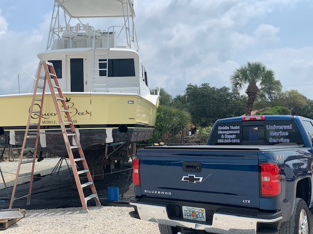
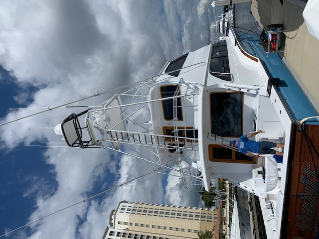
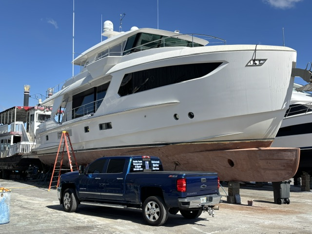

Started by One Man at the Yacht Basin. Still Family-Run Today.
In 1997, Joe Muia started out as a mobile diesel technician working out of the Fort Myers Yacht Basin. Nearly three decades later, that same commitment to honest, dependable work still drives Universal Marine Service.
From One Truck at the Yacht Basin to a Trusted Name in Fort Myers
Universal Marine Service was founded in 1997 by Joe Muia, a mobile diesel technician serving boat owners out of the Fort Myers Yacht Basin. Joe brought the shop to the dock — diagnosing and repairing diesel engines right where boats were kept, and earning a reputation across local marinas as the technician who showed up, knew his stuff, and did the job right.
That reputation is still the foundation of everything we do today. Joe's son, Tyler, grew up around the business and spent more than eight years working alongside his father learning the trade firsthand — from troubleshooting a stubborn diesel to treating every customer's boat like it was family.
Nearly three decades later, that same commitment still guides every job: integrity in every estimate, dependability in every appointment, and professional-grade workmanship — whether it's a routine oil change or a complex electrical repair.


Straight From Joe
Before 1997, I worked on Caterpillar engines, electrical, hydraulic, fuel, and cooling systems, with over 28 years of experience. I have 11 years of experience on Yanmar, Cummins, Ford Lehman, Universal, Westerbeke, Onan, John Deere, Kohler, Northern Lights, Volvo, North American, MAN, and MTU engines.
I love what I do each and every day. I treat your boat, yacht, or ship like it's my own. I like to diagnose the problem — not change a bunch of unnecessary parts to find it. It's a one-man show instead of a lot of service people on your boat, yacht, or ship, just me. A lot less communication problems, one invoice instead of five, less headaches, and peace-of-mind service.
Our Core Values
Integrity
Honest assessments and transparent pricing — we only recommend work your vessel actually needs.
Dependability
We show up on schedule and communicate clearly from estimate to completion.
Professional Workmanship
Factory-trained technicians using proper tools, parts, and procedures on every job.
Genuine Care
We treat every vessel — and every customer relationship — like it's our own family's boat.
Nearly Three Decades on the Water
Joe Muia Goes Out on His Own
Joe Muia founded Universal Marine Service, working as a mobile diesel technician at the docks of the Fort Myers Yacht Basin.
Word Spreads Across the Marinas
Local marinas and boat owners came to know Joe as the technician who showed up and got it right — and the business grew one referral at a time.
Joe's Son Tyler Joins the Trade
Joe's son Tyler joined the business, spending more than eight years working alongside his father learning engines, generators, and the marine trade from the ground up.
Still Family-Owned, Nearly 30 Years On
Still family-owned and operated, we serve boat owners, sportfishing crews, yacht owners, and marinas throughout Fort Myers and Southwest Florida.

Trusted by Owners & Marinas Alike
Boat Owners
Reliable service for weekend boaters and full-time cruisers alike.
Sportfishing Owners
Offshore-ready engines and systems you can count on.
Yacht & Catamaran Owners
Detail-oriented service befitting a premium vessel.
Local Marinas
Dependable partner service programs for marina fleets and tenants.